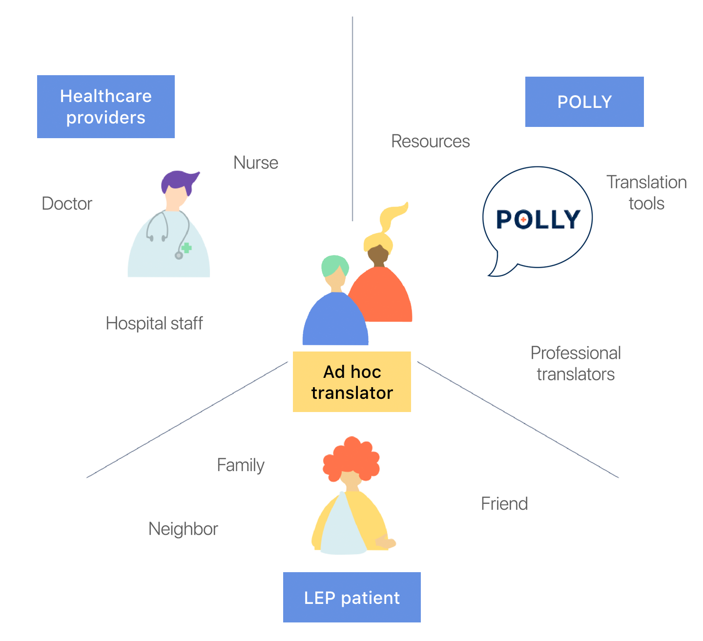
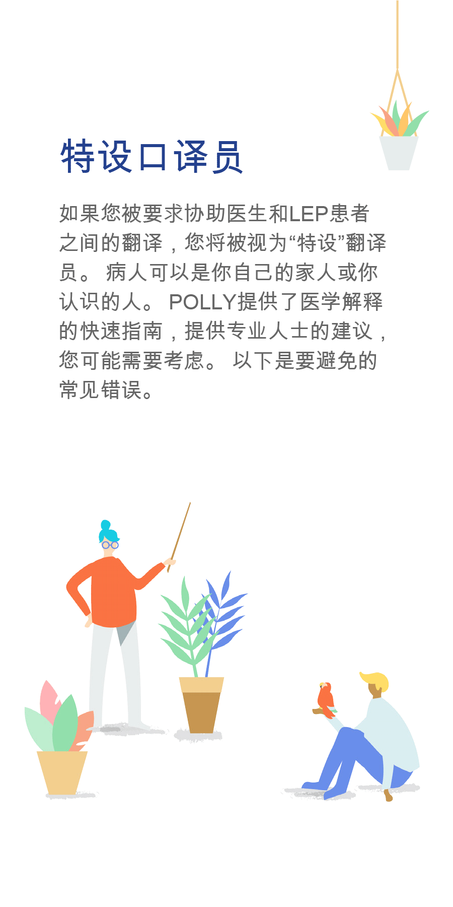
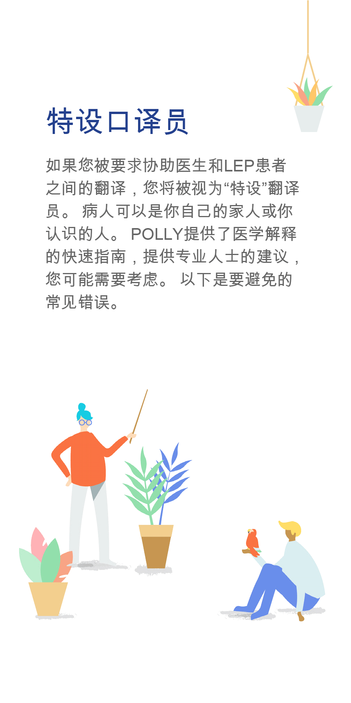

Easing ad hoc medical translation
Challenge
To connect caretakers of low-English proficiency patients with quality medical translation options.
Outcome
POLLY, a pocket-sized course and mobile app that facilitate communication between LEP patients, doctors and caretakers.
Role Researcher & UX designer
Team Lily Kim (designer), Helen Kim (developer), Sophie Zhao (developer)
Overview
Prompted by personal experiences, my team uncovered emotional and cultural barriers preventing proper communication between doctors and low-English proficiency patients, who often rely on unqualified friends or family to be "ad hoc" translators, in place of a professional.
We designed 2 touchpoints:
1) The pocket course provides quick professional translation tips and directs users over to the mobile app.
2) The mobile app offers POLLY's full services, helping users request professionals, translate better, and track medical activity.
Research
Validation
We began with background research to gauge the scale of this problem.
Over 60 million people in the US are bilingual, and over 40% of them are considered Low English Proficient (LEP).
We guessed that if most people translated with family, like we'd seen, then they weren't getting reliable information and follow-up. The long-term effects of this oversight include unfilled prescriptions, the endangered health of millions, and inflated costs for delayed treatment.
Ad Hoc Interviews
The team conducted stakeholder interviews in pairs. We discovered situational complexitites and strong feelings speaking with people who have translated in health settings.
Out of 13 interviewees, only 2 had been offered professional translation services. Neither opted to use them.
- Second generation children often translate for older family members.
- As immigrants, many LEP patients carry “at-risk” status (uninsured, undocumented, of low-SES background).
- Many patients don't feel comfortable with a stranger in the room during medical visits anyway.
My parents think I'm more legit than [a professional translator]. And they trust me; if I mess up, it wasn't on purpose.
Expert Interviews
However, we found opposing viewpoints among medical staff. We talked to staff at 3 hospitals in Pittsburgh and 1 clinic elsewhere.
3 out of 4 health teams claimed to prefer using official translation services, while 1 enlisted the help of their own staff and locals.
- The difficult process of requesting translators prevents doctors (especially private practitioners) from giving patients the option.
- 2 clinics were strict on consulting professional translators only. They had more efficient processes in place to reach them.
Family members put their own spin on things. If they don't understand, they skip it. We use family as a last resort.
Users & Context
Profile
- Age: 15-35
- Biracial or non-Caucasian
- Has immigrant relatives
User Needs
- Better tools or options for translation
- Respect for doctor-patient confidentiality
Our users are family members of non-native speakers who act as translators in the patient's appointments. Typically English is still their primary language, so they feel frustrated and ill-equipped to translate medical terminology.
Stakeholders
We identified the ad hoc translator as our target user because of their unique position in the patient/doctor dynamic. Aside from translation, they provide emotional support and ensure trust for the patient in a way professionals cannot replicate.
Research Analysis
From our research, we identified common points of stress for caretakers before, during & after appointments: scheduling, translating, retrieving prescriptions and following up with specialists, and more.
Development
Pocket Course Development
With these takeaways in mind, we decided our design should keep ad hoc translators well-informed about their rights to quality care and a professional translator, as well as best practices for translation.
We crafted a “crash course” filled with interpretation tips from professionals, designed to feel reassuring and fit in the user’s pocket.
App Development
The app’s purpose was to offer users more abundant resources in digital form. I determined useful features through research, created wireframes and user flows, wrote copy, tested usability and created assets.
Final Deliverables
Pocket Course
The pocket course provides professional translation tips, bringing attention to common errors. We crafted the visual language to let the user feel supported and reassured.
 

Mobile App
The mobile app supports users with more robust tools and services. We chose key features to help users feel like they have choice and control, whatever situation arises.
Requesting a Translator
This feature allows patients to request a translator that they'd be comfortable with ahead of time. Due to the superior quality of translation, we (and doctors) want this option to be the patient's first choice as well.
Viewing Patient Profiles
Many different tasks may fall to the caretaker, i.e. picking up prescriptions or catching doctors up on the patient's situation. "Profiles" are a place for them to track information, with some measures in place for patient privacy.
Resources
In cases where translation falls to the ad hoc, "Resources" ensures that they are at least well-equipped for the task. It includes a medical dictionary and a digital Pocket Course.
Results
The team presented our final prototypes to 6 ad hocs for user testing. We asked them to read through the Pocket Course and perform key task flows in the app.
After completing various tasks, 4 out of 6 former ad hocs said they would opt to request a professional next time.
We also showed our prototypes to doctors and medical staff, to check for alignment with their policies and existing processes.
2 out of 3 medical experts claimed they would recommend POLLY to their patients. 1 wanted more emphasis placed on professional services over ad hoc translation.
Future Goals & Metrics
- Increase in the number of LEP patients & families at regular medical checkups
- Fewer unfilled prescriptions
- Increased usage of medical translation services
- Partnerships with existing translation services and local healthcare/relocation centers
- Designing for localized needs (i.e. different languages, cultural contexts, distribution methods)